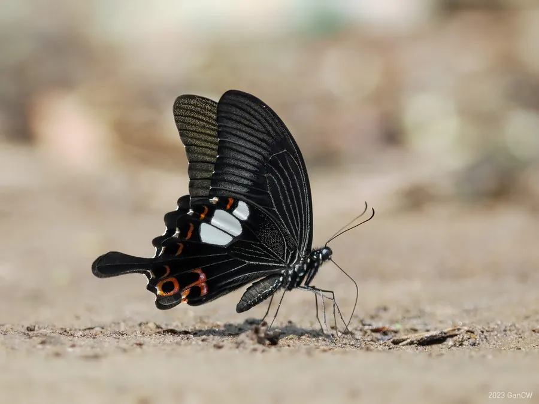

昆虫 · 动物界
玉斑凤蝶 Papilio helenus

翅面黑色、后翅有数个白色大斑和红色月牙斑的凤蝶，幼虫取食柑橘类植物，中国南方至东南亚常见。
- 分类
- 门节肢动物门纲昆虫纲目鳞翅目科凤蝶科属凤蝶属
- 栖息环境
- 山地林缘、溪谷、柑橘园与庭院，寄主植物附近
- 地理分布
- 中国南方、日本南部、东南亚和印度等地
- 保护级别
- 暂无评估
物种志
玉斑凤蝶翅展约 10–12 cm，翅面黑褐色，后翅中部有几个大小不一的白色斑块，外缘有一排红色月牙斑，尾突明显。雌雄外形相近，雌蝶的白色斑块通常更大，翅色略淡。
成虫飞行迅速，喜欢访花和到溪边吸水，雌蝶把卵产在柑橘、柚、花椒等芸香科植物的嫩叶上，幼虫取食叶片，老熟后化蛹。它一年发生多代，以蛹越冬，分布在中国南方、日本南部、东南亚和印度等地，是南方山地和园林中常见的凤蝶。玉斑凤蝶的白色大斑在黑色翅面上十分醒目，飞行时容易被观察到，也是生态摄影的常见对象。它的蛹形似一片卷起的枯叶，常挂在枝条上，不容易被天敌发现。它喜欢在午后活动。
形态与习性
- 食性幼虫取食柑橘、柚、花椒等芸香科叶片；成虫吸蜜
- 翅展约 10–12 cm
- 识别黑色翅面，后翅有白色大斑和红色月牙斑
- 生活史一年发生多代，以蛹越冬
- 分布中国南方至东南亚、印度
趣味知识
- 玉斑凤蝶后翅的白色大斑像玉石一样醒目，因此得名。
- 它常在溪边湿地上吸水，成群时场面很热闹。
- 幼虫取食柑橘类嫩叶，数量多时会造成少量叶片缺损。